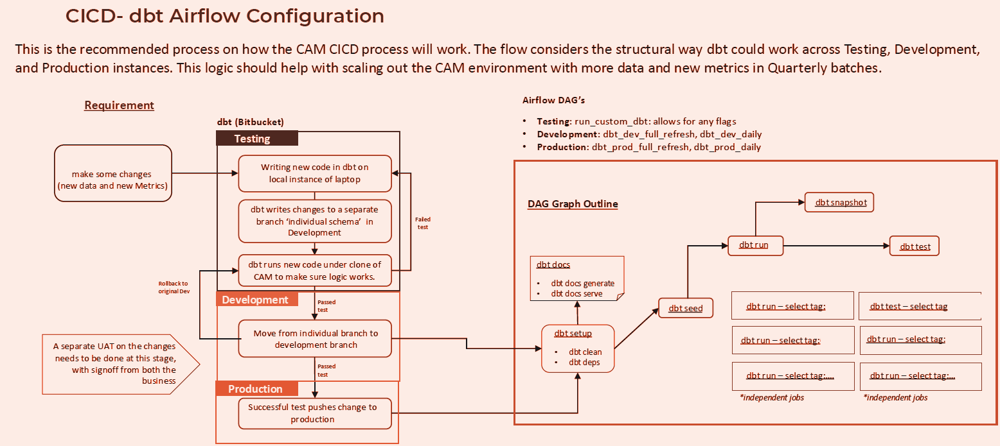
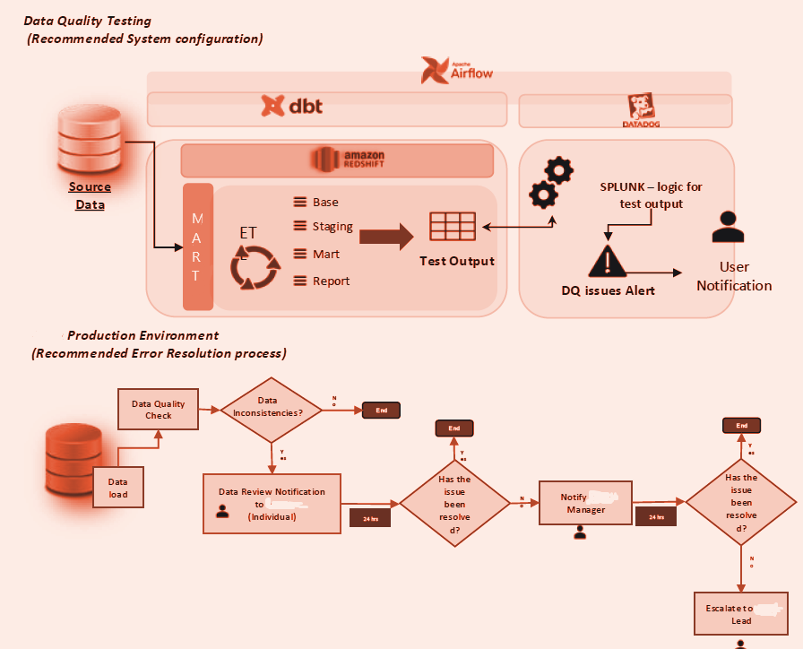

Concept
Designed and delivered a Centralised Audience Mart (CAM) to provide a scalable foundation for audience member insight across reporting, ad‑hoc analysis, and data science. The solution prioritised reduced platform complexity, a documented operating model, and a standards framework to support ongoing evolution and metric consistency.
Objectives
- Reduce complexity: simplify integration patterns to minimise failure risk and improve maintainability.
- Document the solution: establish clear, reusable documentation for platform understanding and onboarding.
- Standards framework: define a simplified MDM/standards approach to support future growth and change.
- Commercial enablement: baseline audience data for dashboards, self‑service access, and analytics feature layers.
Data Sources
- SAP / Gigya accounts: account lifecycle (signup, registration, verification, active/inactive).
- Digital events (Tealium / Atomic domain): event and interaction telemetry, user context, session attributes.
- Third‑party platforms: Facebook, Google, Apple (activation/marketing signals where applicable).
- Content metadata: consolidated into iView, News, and Papi domains.
Architecture (dbt Layering)
The platform follows a layered dbt structure to keep logic clean, testable, and easier to evolve:
- CAM Base: source alignment (renaming, recasting types, required field acquisition).
- CAM Staging: entity construction and normalisation (joins, entity groupings, derived fields).
- CAM Mart: curated datasets (final entity association, minimal duplication, only materialise when needed).
- Reporting layer: analytics‑ready tables and reference models, optimised for BI consumption.
Data Pipeline
SAP/Gigya + Tealium + metadata → dbt (Base → Staging → Mart) → Reporting layer → Power BI dashboards. Pipelines are orchestrated using Airflow, enabling consistent scheduling, dependency management, and automated documentation.
Incremental & Performance Design
Implemented incremental ETL patterns to append new events/accounts and update point‑in‑time entities, allowing missed batches to catch up safely by resuming from the last successful load. Accounts/users are treated as current‑state ("point in time") datasets, while interactions/activities are treated as historical event streams. The daily ETL was optimised to run in ~48 minutes.
CI/CD and Operationalisation
Established a structured CI/CD approach across Testing, Development, and Production environments. Changes are developed in isolated branches/schemas, validated with dbt tests, and promoted through controlled releases. Airflow DAGs support environment‑specific runs and automate dbt documentation generation to keep solution knowledge current.

Data Quality and Testing
Built a robust testing strategy, including 80+ data quality checks across Base, Staging, Mart, and Reporting. Tests cover schema compliance, freshness, referential integrity, table size consistency, and trend/outlier checks. Failures are classified by severity (warning vs error) and integrated into an alerting workflow for rapid triage.

Insights & Reporting
Delivered Power BI reporting solutions that improved the BI consumption experience and increased stakeholder adoption. Reporting models were designed to support descriptive and diagnostic views, with scope to extend into feature layers for predictive and prescriptive analytics.
Delivered Outcomes (Highlights)
- Engineered scalable dbt + Redshift + Airflow pipelines, reducing ingestion time by ~30% and improving model accuracy by ~50%.
- Modernised the cloud‑native warehouse experience, reducing retrieval time by ~40% and improving BI usability.
- Implemented a transformation framework that reduced processing time by ~50% and lifted data quality by ~40%.
- Led metric harmonisation across teams, improving consistency by ~20%.
- Delivered segmentation POCs using clustering algorithms to support audience targeting and activation.
Future Scope (Next Iterations)
- User stitching: logic prepared and awaiting approval for inclusion in a future release.
- Sessionisation: investigated and requires cross‑group agreement on approach and definitions.
- Metadata uplift: further clean‑up and standardisation offers significant downstream value.
- Historical loads: extend backfill to strengthen trend analysis and predictive analytics readiness.
Technologies Used
- SAP / Gigya
- Tealium
- Amazon Redshift
- dbt
- Apache Airflow
- Power BI
- Python (segmentation / clustering)